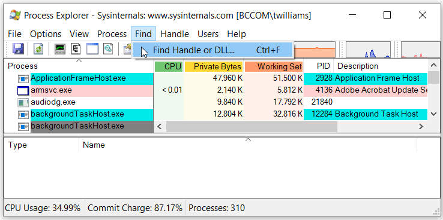

Process Explorer
Use Process Explorer to find and kill processes with open file handles.
warning UPDATE
I have changed my suggestion from Process Explorer to Lock Hunter.
Deleting, moving, or renaming a file fails when a process has an open handle to it. The worst is when I don't know what process has the open handle. Process Explorer helps solve this problem.
linkRestart computer
I used to fix this problem by restarting my computer. Whatever process had the open file handle would be killed by the restart and stay "dead". However, I think this is a huge inconvenience. I had all my programs running and files open--everything in a particular state--but all of that is also lost in the restart.
Sometimes restarting my computer is the correct fix. However, I was very happy when I found a targeted solution to this problem.
linkUse Process Explorer
Here is an example of how to use Process Explorer to find and kill the process with an open handle to a particular file. Suppose I want clean my repository by executing git clean -fdx. As shown in the feature image above, it can fail if Visual Studio is still open.
1link$git clean -fdx
Unlink of file 'src/.vs/Elmish.WPF/v16/TestStore/0/000.testlog' failed. Should I try again? (y/n)Use the "Find Handle or DLL..." feature...

...to enter the file (or folder!) name, click "Search", then click on the correct search result...

...and kill it.

linkSummary
Follow these steps to kill an unknown process with an open file handle.
- First time
- Download Process Explorer
- Every time
- Open Process Explorer
- Press
Ctrl+For select File -> Find Handle or DLL... - Enter the file name (or the name of a folder in its path)
- Press Enter or click Search
- Click on the correct search result
- Press
Delor right-click and select Kill Process - Confirm the killing of the process
linkTags
The tags feature of Coding Blog Plugin is still being developed. Eventually the tags will link somewhere.